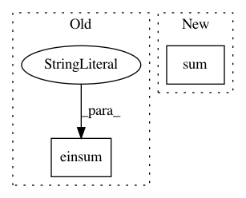

63352897d1db6a7a009a1097ee9b16be13fc53b3,qucumber/rbm/binary_rbm.py,BinaryRBM,effective_energy_gradient,#BinaryRBM#,102
Before Change
hb_grad = -prob
else:
W_grad = -torch.einsum("ij,ik->jk", (prob, v))
vb_grad = -torch.einsum("ij->j", (v,))
hb_grad = -torch.einsum("ij->j", (prob,))
return parameters_to_vector([W_grad, vb_grad, hb_grad])
After Change
hb_grad = -prob
else:
W_grad = -torch.matmul(prob.t(), v)
vb_grad = -torch.sum(v, 0)
hb_grad = -torch.sum(prob, 0)
return parameters_to_vector([W_grad, vb_grad, hb_grad])
In pattern: SUPERPATTERN
Frequency: 4
Non-data size: 2
Instances
Project Name: PIQuIL/QuCumber
Commit Name: 63352897d1db6a7a009a1097ee9b16be13fc53b3
Time: 2018-12-17
Author: emerali@users.noreply.github.com
File Name: qucumber/rbm/binary_rbm.py
Class Name: BinaryRBM
Method Name: effective_energy_gradient
Project Name: geomstats/geomstats
Commit Name: 315990901cdcdca241013ee5e6c581391bae2523
Time: 2020-12-15
Author: yann.thanwerdas@gmail.com
File Name: geomstats/geometry/spd_matrices.py
Class Name: SPDMetricBuresWasserstein
Method Name: inner_product
Project Name: SheffieldML/GPy
Commit Name: a11cf422c2ba893e2168837d331eccdbb3c7a01f
Time: 2015-04-28
Author: james.hensman@gmail.com
File Name: GPy/kern/_src/stationary.py
Class Name: Stationary
Method Name: update_gradients_full
Project Name: scikit-learn-contrib/DESlib
Commit Name: 596ee79aaf461ccf9f8477080ade854c675a902e
Time: 2018-04-07
Author: rafaelmenelau@gmail.com
File Name: deslib/des/probabilistic.py
Class Name: Probabilistic
Method Name: estimate_competence